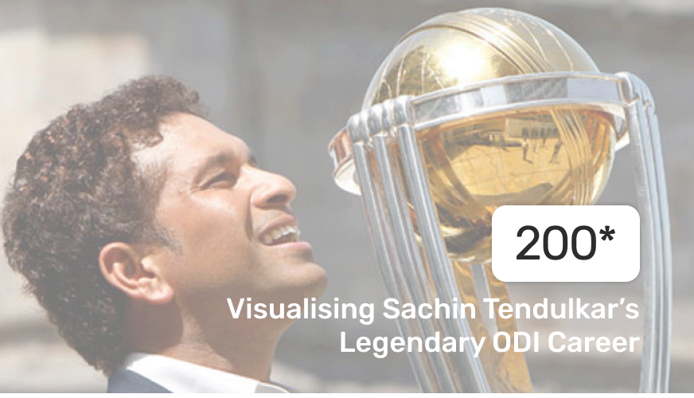

<section class="sidenav-container" fxLayout="column" fxLayoutGap.gt-xs="3rem" fxLayoutGap.xs="1rem">

  <div fxFlex="25">

  

  </div>

  <div fxFlex fxLayout="column" fxLayoutGap="1rem" style="margin: 2rem 0;">

    <button mat-raised-button class="nav-button" routerLink="/overview" routerLinkActive="active">Overview</button>
    <button mat-raised-button class="nav-button" routerLink="/batting-wizard" routerLinkActive="active">Batting Wizard</button>
    <button mat-raised-button class="nav-button" routerLink="/a-handy-spinner" routerLinkActive="active">A handy off-spinner and fielder</button>
    <button mat-raised-button class="nav-button" routerLink="/worldcup-maestro" routerLinkActive="active">World Cup Maestro</button>
    <button mat-raised-button class="nav-button" routerLink="/global-phenomenon" routerLinkActive="active">A Global Phenomenon</button>

  </div>

  <div style="color: white;" fxFlex="20" fxLayout="column" fxLayoutAlign="center center">

    

  </div>

</section>
